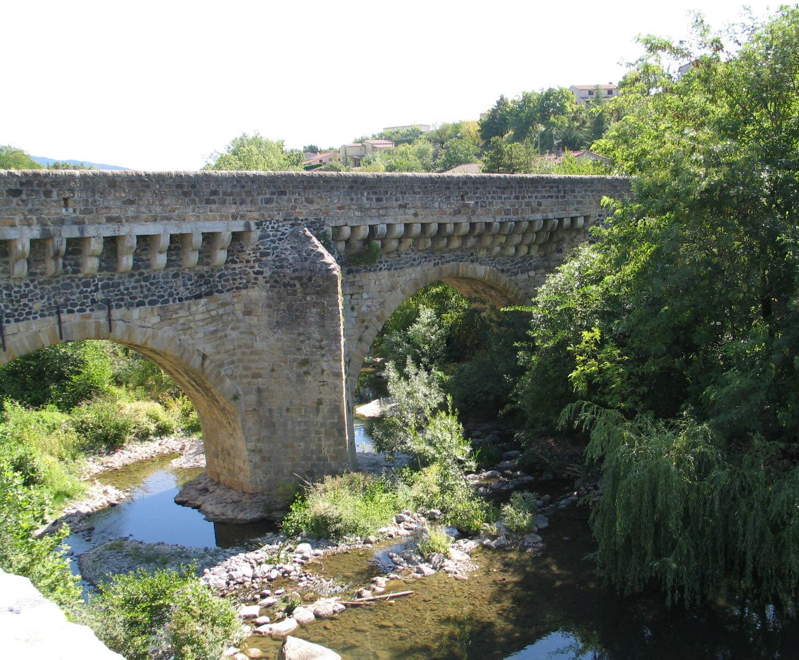

The county town of Ardèche, Privas is just 10 minutes from Les Cabritas: close enough to pop over for an evening out or a morning market without disrupting your holiday plans. A former Huguenot stronghold, the town still carries traces of its turbulent history beneath a now-peaceful atmosphere.

A rebuilt Huguenot stronghold
Razed in the 17th century after a siege that remains famous in the town's history, Privas was largely rebuilt, but the old centre still holds several reminders of that era: the Pont Louis XIII, a remarkable listed bridge said to date back to the 12th century, the Tour Diane de Poitiers, the Porte aux Diamants and the Récollets convent.
The capital of candied chestnuts
Privas is recognised as a "Site Remarquable du Goût" for its tradition around the sweet chestnut tree, and has built up a reputation over the generations as the capital of candied chestnuts (marrons glacés) and chestnut cream. Several artisan producers keep this know-how alive in the heart of town.
Good to know before you visit
A market fills the town every Wednesday and Saturday morning at Place de l'Hôtel de Ville, with plenty of local produce. Given how close it is to Flaviac, Privas suits both a dedicated outing and a quick errand or lunch stop during your stay. The town is also a good base for combining a morning of shopping or market browsing with an afternoon hike around Fort Mahon or the Jaubernie caves.
Practical info from Les Cabritas
- Distance from Flaviac: about 10 min by car
- Best time to go: all year round, market on Wednesday and Saturday mornings
- Great for: a stroll through town, food, local market
Fancy discovering Privas from your cottage in Ardèche?
Les Cabritas welcomes you in Flaviac, at the heart of Ardèche, for a comfortable stay with a private pool, just a stone's throw from the region's most beautiful sites.
Check availability